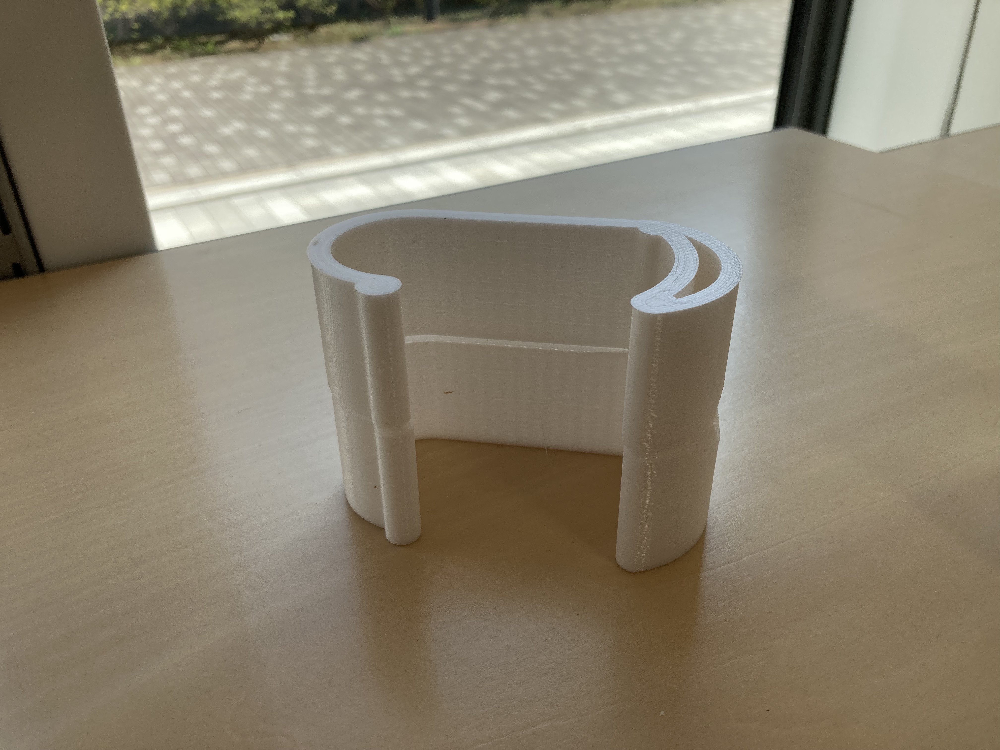

10月 ODP

カバンなどをかけるためのフックを作った
point
・２つ重ねて、一度に二つ出せるように設計
0.5mmの隙間を開けて印刷しているので、簡単に取れます
この穴に指をかけてパキッとはずす
写真綺麗に撮りたい
ちょっと頑張って家で撮影してみた。光の当て方で全て決まると理解
個人的に綺麗に取れたと思ったのが数枚
かねてからの課題であったペンの問題
私が以前作ったペンは、パーツごとには綺麗に出せるが一度に出そうとしたり、
スピードを上げたりすると、ネジがはまらなくなるという課題があった。
一度こんな感じで、パーツを離して印刷してみたが、見た目は綺麗に出たがネジが入らなかった
試行錯誤を重ね、ついに一回で両パーツ出すことに成功した
その方法がこちら
直列に重ねたら何とかいけました。
外したら、これもパキッと折るだけで使えます。